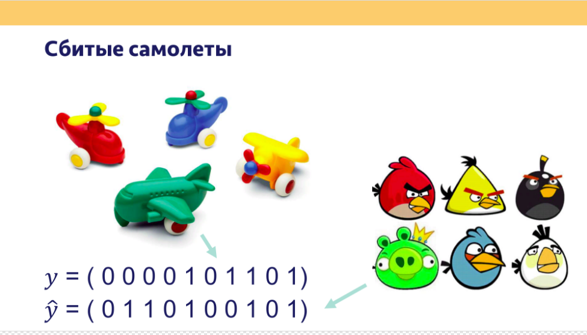
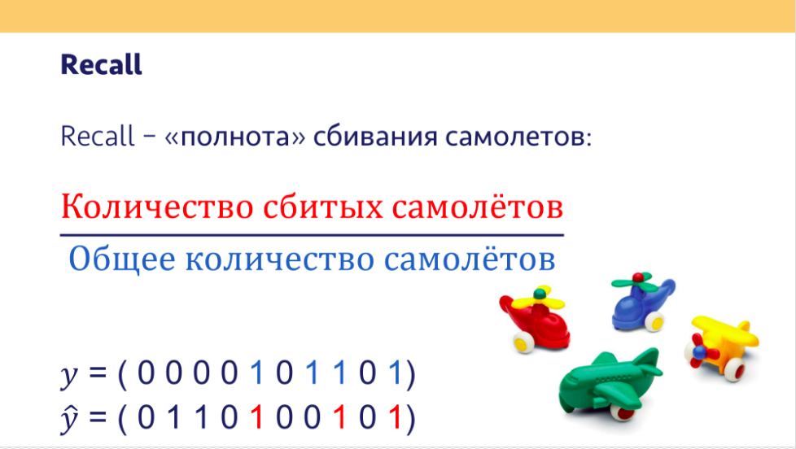
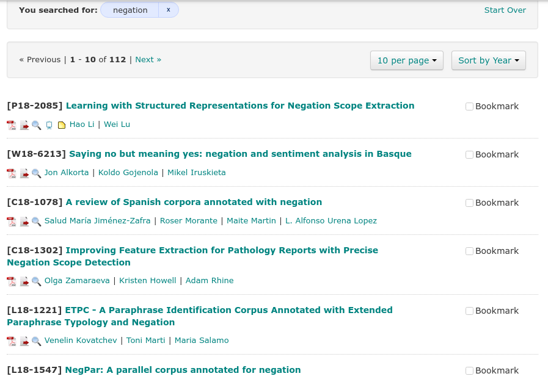
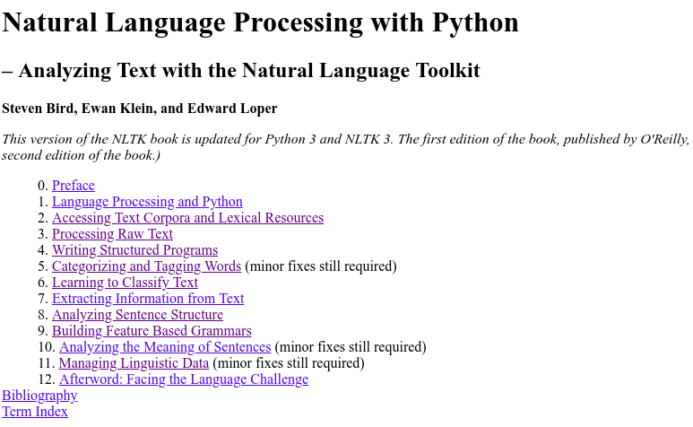
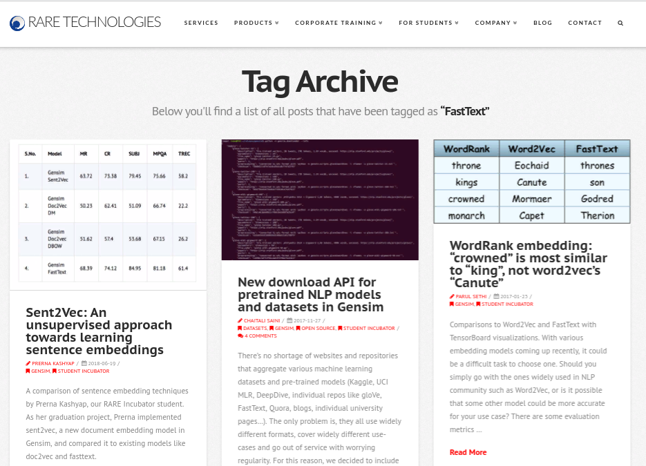
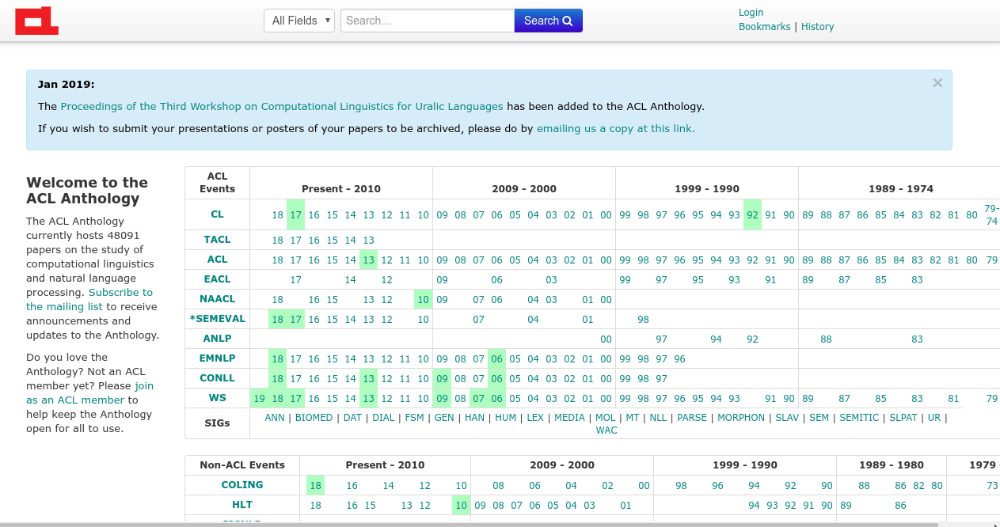
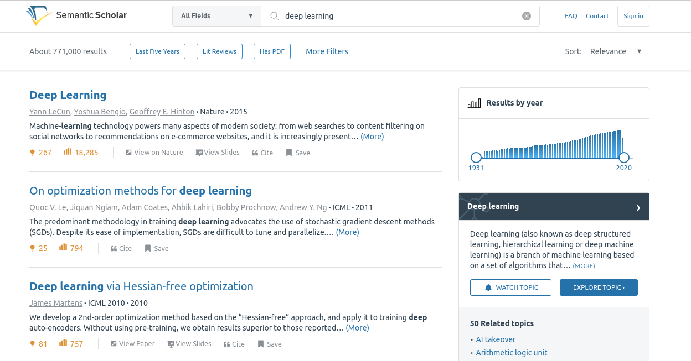
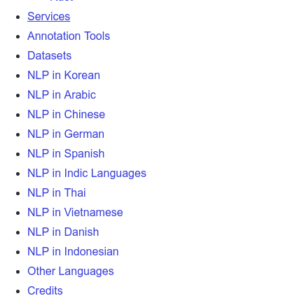
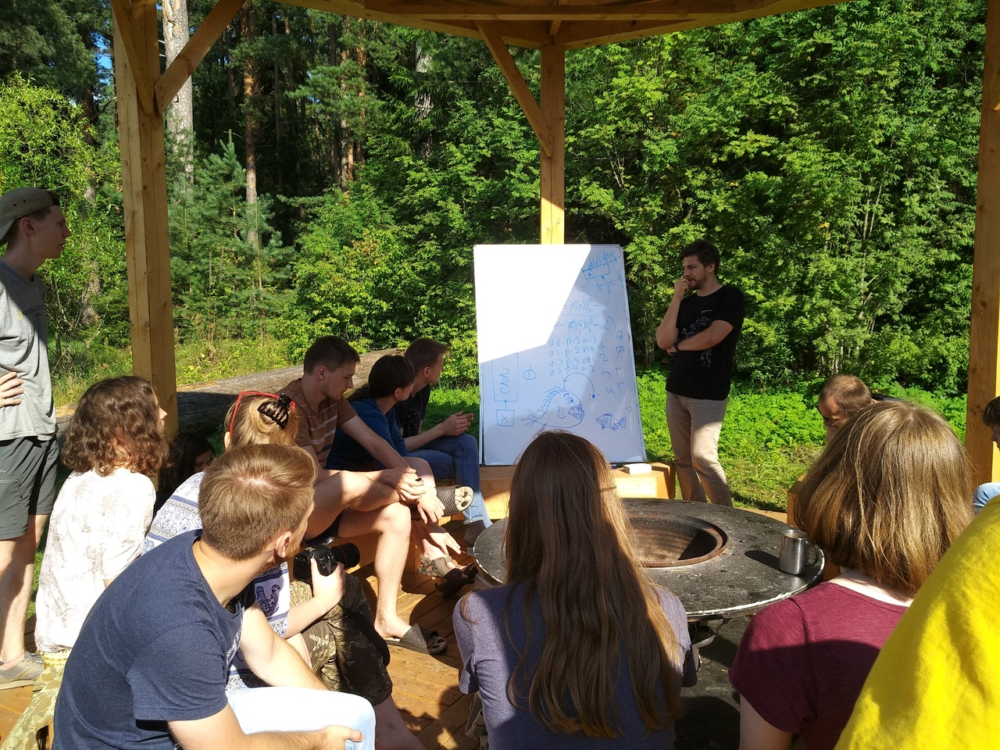

Ты не поверишь, что скрывает NLP! Смотри дальше, чтобы узнать
Ильдар Белялов
17.02.19
Вводные слова
О лекторе
Если есть вопросы, то буду рад вам помочь с ними разобраться. Пишите:
- http://vk.me/theotheo
- http://t.me/ibelyalov
О вас
О лекции
Хотелось бы создать представление о том, чем занимается НЛП: о задачах, результатах, о возможностях и проблемах
Чтобы вы могли гордо сказать: “НЛП? Ну я что-то слышал…”
Введение
Проблема
Распознавание кликбейтов
Кликбейт
Кликбейт-заголовок (от clickbait — клик-приманка) — преднамеренно искаженный заголовок материала, зачастую низкого качества, основная задача которого — привлечение внимания пользователей социальной сети и провокация с целью перейти по ссылке.https://netpeak.net/ru/blog/klikbyeit-zagolovki-vse-pochemu-lenta-facebook-stanet-luchshe/
Яндекс.Дзен
| Признак | Пример |
|---|---|
| Утаивание информации, без которой невозможно понять содержание материала | Вы никогда не поверите, кто упал на красной дорожке… |
| Бессмысленные эмоционально окрашенные фразы | Свежая фотоподборка! Полный угар! Лежали всем офисом |
| Преувеличение или искажение фактов | Ученые выяснили: планете осталось недолго… |
| Обилие лишних заглавных букв и знаков препинания | Случай на пляже В СОЧИ!!! СМОТРЕТЬ всем! |
| Повелительное наклонение, обращение на «ты» | Ты не поверишь, что скрывает правительство! Жми ссылку, чтобы узнать! |
| Искажение текста: лишние пробелы или их отсутствие, орфографические ошибки | Новая ЗВЕЗДАЯ диета! Читай пока неудалили! |
https://yandex.ru/support/zen/requirements/clickbait.html
ВК
 https://vk.com/@brown_room-click-click
https://vk.com/@brown_room-click-click
People tell us they don’t like stories that are misleading, sensational or spammy. That includes clickbait headlines that are designed to get attention and lure visitors into clicking on a link. In an effort to support an informed community, we’re always working to determine what stories might have clickbait headlines so we can show them less often.https://newsroom.fb.com/news/2017/05/news-feed-fyi-new-updates-to-reduce-clickbait-headlines/
 https://vk.com/weirdreparametrizationtrick?w=wall-131489096_4058
https://vk.com/weirdreparametrizationtrick?w=wall-131489096_4058
Корпус
Abhijnan Chakraborty, Bhargavi Paranjape, Sourya Kakarla, and Niloy Ganguly. "Stop Clickbait: Detecting and Preventing Clickbaits in Online News Media”. In Proceedings of the 2016 IEEE/ACM International Conference on Advances in Social Networks Analysis and Mining (ASONAM), San Fransisco, US, August 2016.https://github.com/bhargaviparanjape/clickbait
Конвертация в dataframe
from pathlib import Path
import pandas as pd
clickbait_text = Path('clickbait/dataset/clickbait_data').read_text()
non_clickbait_text = Path('clickbait/dataset/non_clickbait_data').read_text()
clickbait = pd.DataFrame([(line, 1) for line in clickbait_text.split('\n') if line], columns=['text', 'label'])
non_clickbait = pd.DataFrame([(line, 0) for line in non_clickbait_text.split('\n') if line], columns=['text', 'label'])
df = pd.concat([clickbait, non_clickbait])
df = df.reset_index(drop=True)
# df.to_csv('df.csv', index=False)Пример
Dataframe
Грубо говоря табличный формат данных
Структура данных
text – заголовки
label – 1, если кликбейт; 0, если не
Итак
Есть примеры кликбейтов и есть примеры некликбейтов.
Как научить отличать их друг от друга?
Решение в 1 строку. WOW!
“Решаем”
Оценим результаты
Метрики классификации
https://github.com/utd-ai/DMIA2018_Fall_public/blob/master/lecture05/L5_Validation.pdf

Precision

Recall

F1
$F1 = 2\frac{precision \cdot recall}{precision + recall}$
Матрица ошибок
5 правил кликбейта

https://regex101.com/r/WwV5Rg/1
Оценка
Машинное обучение
Пример, который вы не забудете
http://www.r2d3.us/Наглядное-Введение-в-Теорию-Машинного-Обучения/
X – матрица фичей
y – вектор лейблов
X = [возвышение, год постройки, кол-во ванных, кол-во спален, стоимость, площадь, цена за m2]
y = [Сан-Франциско, Нью-Йорк]
для примера
[task] Классификация текстов
Векторизация
Обучение
Оценка
Интроспекция
Совсем новый текст
Если классификаторы вас не любят, просто запомните эти два-три-н слова
Нграммы
from sklearn.linear_model import LogisticRegression
# from sklearn.linear_model import SGDClassifier
vectorizer = CountVectorizer(ngram_range=(1, 2))
y = df['label']
X = vectorizer.fit_transform(df['text'])
X_train, X_test, y_train, y_test = train_test_split(X, y)
clf = LogisticRegression()
clf.fit(X_train, y_train)Оценка
Интроспекция
# from sklearn.linear_model import LogisticRegression
# # from sklearn.linear_model import SGDClassifier
# vectorizer = CountVectorizer(ngram_range=(2, 2))
# y = df['label']
# X = vectorizer.fit_transform(df['text'])
# X_train, X_test, y_train, y_test = train_test_split(X, y)
# clf = LogisticRegression()
# clf.fit(X_train, y_train)Мешок слов
[task] Negation

https://aclanthology.info/catalog?q=negation&search_field=all_fields&sort=publish_date+desc%2C+venue_type+asc%2C+paper_anthology+asc%2C+score+asc&utf8=✓
[task] Анализ тональности

Анализ тональности – задача выявления эмоциональной окрашенности текста
Языковая модель для генерации
Собираем слова вместе
Частоты пар / биграмм
Вероятности биграмм
# an nltk.ConditionalProbDist() maps pairs to probabilities.
# One way in which we can do this is by using Maximum Likelihood Estimation (MLE)
cprob_2gram = nltk.ConditionalProbDist(cfreq_2gram, nltk.MLEProbDist)
# Here is what we find for "my": a Maximum Likelihood Estimation-based probability distribution,
# as a MLEProbDist object.
cprob_2gram["I"] # Вероятность IВероятность целого предложения
freq_1gram = nltk.FreqDist(words)
len_words = len(words)
def unigram_prob(word):
return freq_1gram[word] / len_wordsГенерация текста
Сгенерированные примеры

‘What Was Better Project NASCAR driver Kyle Busch wins season Trade’
‘What Is Real, Official UN releases 2005 wraps up German music’
‘5 Ridiculously Adorable Animals 25 Times “Frasier” Was Grosser Than Reese's’
[task] Spell Checker
[task] Predictive Input
Давай посмотрим на наши слова
Частоты
График топ 20
Логарифмический график
Все
Закон Ципфа
Закон Ципфа: График для частот слов из статей русской Википедии с рангами от 3 до 170
Зако́н Ци́пфа («ранг—частота») — эмпирическая закономерность распределения частоты слов естественного языка: если все слова языка (или просто достаточно длинного текста) упорядочить по убыванию частоты их использования, то частота n-го слова в таком списке окажется приблизительно обратно пропорциональной его порядковому номеру n (так называемому рангу этого слова, см. шкала порядка). Например, второе по используемости слово встречается примерно в два раза реже, чем первое, третье — в три раза реже, чем первое, и так далее.
[task] Частотные словари
https://events.yandex.ru/lib/talks/3298/
Ученые скрывают правда о том, сколько слов в мире!
Разреженность
Какое бы количество текстов мы не взяли – все равно мы не охватим все возможные варианты. То есть всегда будет найдется слово, которое мы не знаем. Что же делать?
Считаем по буквам
Матрица фичей
Обучение
Оценка
Интроспекция
В 1000 раз уменьшить пространство поможет…
SVD
http://setosa.io/ev/principal-component-analysis/
from sklearn.linear_model import LogisticRegression
vectorizer = CountVectorizer(ngram_range=(1, 1), analyzer='char')
y = df['label']
X = vectorizer.fit_transform(df['text'])
from sklearn.decomposition import TruncatedSVD
reduction = TruncatedSVD(n_components=20, algorithm='randomized', n_iter=10, random_state=1)
X = reduction.fit_transform(X)И насколько удачно?
Матрица фичей
N-мерная, плотная (dense)
Обучение
Оценка
[task] Latent semantic analysis (LSA)

Как сделать свой Google
Векторизуем наши документы
Векторизуем запрос
Считаем косинусное расстояние

Отбираем ближайшие документы
[task] Information Retrieval (IR)
Всего 2 размерности дадут вам…
Снова SVD
from sklearn.linear_model import LogisticRegression
vectorizer = CountVectorizer(ngram_range=(1, 1), analyzer='char')
y = df['label']
X = vectorizer.fit_transform(df['text'])
from sklearn.decomposition import TruncatedSVD
reduction = TruncatedSVD(n_components=2, algorithm='randomized', n_iter=10, random_state=1)
X = reduction.fit_transform(X)Матрица фичей
Визуализация
[task] Text visualization
http://textvis.lnu.se
Американские ученые открыли, что смысл слов ближе чем…
построим матрицу слово-слово
(на базе https://github.com/madrugado/word2vec-article/blob/master/svd-example-2.ipynb)
Снова сведем к 2 размерностям
[task] Word embeddings
Граммы, которые изменили мир
Конвертируем в список списков слов
Обучаем word2vec
Каждое слово – вектор
Похожие слова
Близость слов
PyTorch
install
fields
data
VAL_RATIO = 0.2
def prepare_csv(seed=1):
df_train = pd.read_csv("df.csv")
idx = np.arange(df_train.shape[0])
np.random.seed(seed)
np.random.shuffle(idx)
val_size = int(len(idx) * VAL_RATIO)
df_train.iloc[idx[val_size:], :].to_csv("df_train.csv", index=False)
df_train.iloc[idx[:val_size], :].to_csv("df_val.csv", index=False)from torchtext.data import TabularDataset
tv_datafields = [
("text", TEXT), # we won't be needing the id, so we pass in None as the field
("label", LABEL),
]
trn, vld = TabularDataset.splits(
path="./", # the root directory where the data lies
train='df_train.csv', validation="df_val.csv",
format='csv',
skip_header=True, # if your csv header has a header, make sure to pass this to ensure it doesn't get proceesed as data!
fields=tv_datafields)from torchtext.data import Iterator, BucketIterator
train_iter, val_iter = BucketIterator.splits(
(trn, vld), # we pass in the datasets we want the iterator to draw data from
batch_sizes=(64, 64),
device=-1, # if you want to use the GPU, specify the GPU number here
sort_key=lambda x: len(x.text), # the BucketIterator needs to be told what function it should use to group the data.
sort_within_batch=False,
repeat=False # we pass repeat=False because we want to wrap this Iterator layer.
)class BatchWrapper:
def __init__(self, dl, x_var, y_vars):
self.dl, self.x_var, self.y_vars = dl, x_var, y_vars # we pass in the list of attributes for x and y
def __iter__(self):
for batch in self.dl:
x = getattr(batch, self.x_var) # we assume only one input in this wrapper
if self.y_vars is not None: # we will concatenate y into a single tensor
y = torch.cat([getattr(batch, feat).unsqueeze(1) for feat in self.y_vars], dim=1).float()
else:
y = torch.zeros((1))
yield (x, y)
def __len__(self):
return len(self.dl)
Нейросетка
from torch import nn
class SimpleBiLSTMBaseline(nn.Module):
def __init__(self, hidden_dim, emb_dim=300,
spatial_dropout=0.05, recurrent_dropout=0.1, num_linear=1):
super().__init__() # don't forget to call this!
self.embedding = nn.Embedding(len(TEXT.vocab), emb_dim)
self.encoder = nn.LSTM(emb_dim, hidden_dim, num_layers=1, dropout=recurrent_dropout)
self.linear_layers = []
for _ in range(num_linear - 1):
self.linear_layers.append(nn.Linear(hidden_dim, hidden_dim))
self.linear_layers = nn.ModuleList(self.linear_layers)
self.predictor = nn.Linear(hidden_dim, 1)
def forward(self, seq):
hdn, _ = self.encoder(self.embedding(seq))
feature = hdn[-1, :, :]
for layer in self.linear_layers:
feature = layer(feature)
preds = self.predictor(feature)
return predsОбучаем
%%time
for epoch in range(1, epochs + 1):
running_loss = 0.0
running_corrects = 0
model.train() # turn on training mode
for x, y in tqdm.tqdm(train_dl): # thanks to our wrapper, we can intuitively iterate over our data!
opt.zero_grad()
preds = model(x)
loss = loss_func(preds, y)
loss.backward()
opt.step()
running_loss += loss.item() * x.size(0)
epoch_loss = running_loss / len(trn)
# calculate the validation loss for this epoch
val_loss = 0.0
model.eval() # turn on evaluation mode
for x, y in valid_dl:
preds = model(x)
loss = loss_func(preds, y)
val_loss += loss.item() * x.size(0)
val_loss /= len(vld)
print('Epoch: {}, Training Loss: {:.4f}, Validation Loss: {:.4f}'.format(epoch, epoch_loss, val_loss))Программисты в ужасе от того, что может генерация кода
Machine Learning for Big Code and Naturalness
 https://arxiv.org/abs/1709.06182
https://arxiv.org/abs/1709.06182
JetBrains Research
ШОК! Количество задач опять выросло
Резюме
Очень много чего интересного еще
- multi-task joint learning
- reinforcement learning
- корпусную лингвистику
- мультиязыковые модели
- диалоговые системы
- …
3 причины почему сложно:
- неоднозначен
- разрежен
- потенциально бесконечная вложенность
3 подхода к методам:
- rule-based
- статистический
- нейросетевой
Знайте Python
Знайте классные тулзы
sklearn
 https://scikit-learn.org/stable/
https://scikit-learn.org/stable/
NLTK

https://www.nltk.org/book/
gensim

https://rare-technologies.com/
pytorch
https://github.com/hunkim/PyTorchZeroToAll
AllenNLP
https://demo.allennlp.org/machine-comprehension
Читайте
ACL Anthology
 https://aclanthology.info
Диалог

Arxiv
https://arxiv.org
 https://vk.com/arxivfeed
https://vk.com/arxivfeed
Semantic Scholar
 https://www.semanticscholar.org/
Awesome NLP
 https://github.com/keon/awesome-nlp
Летняя школа по NLP
